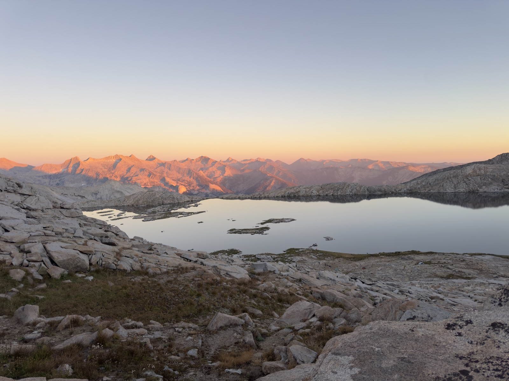
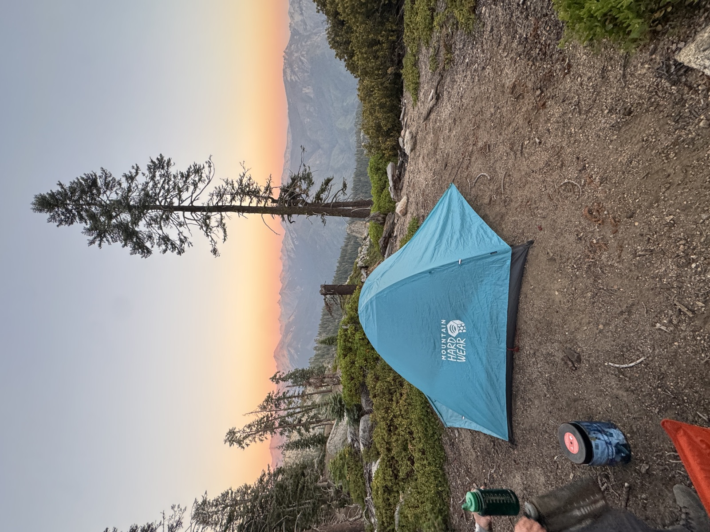
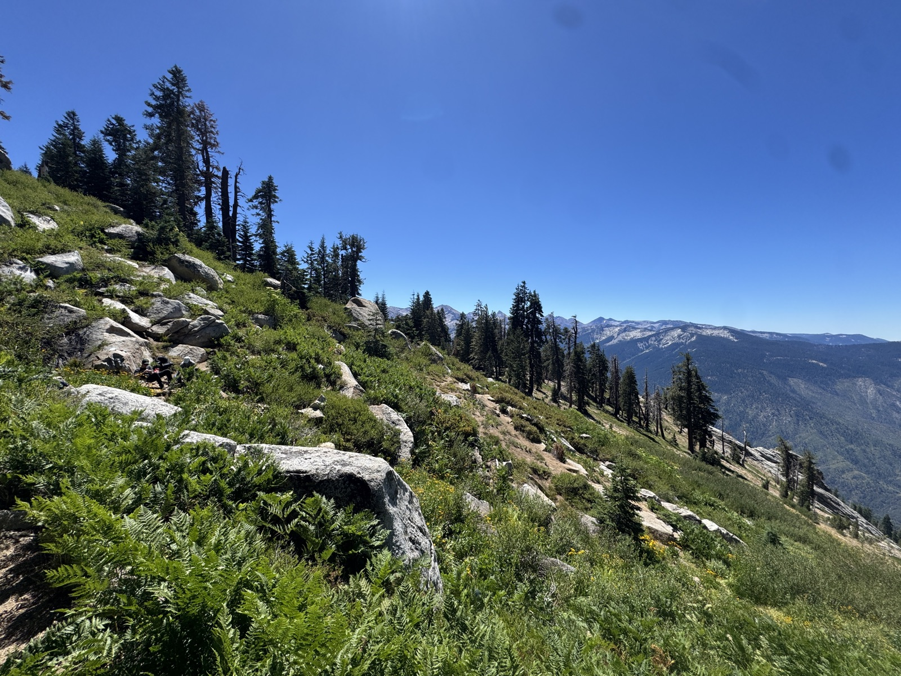
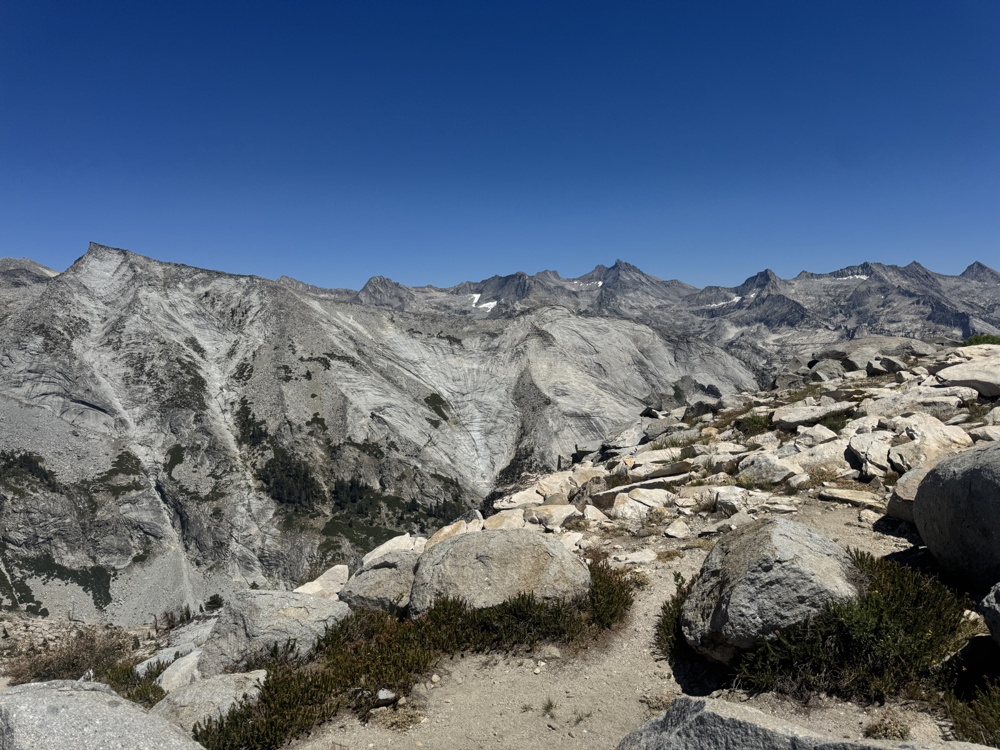
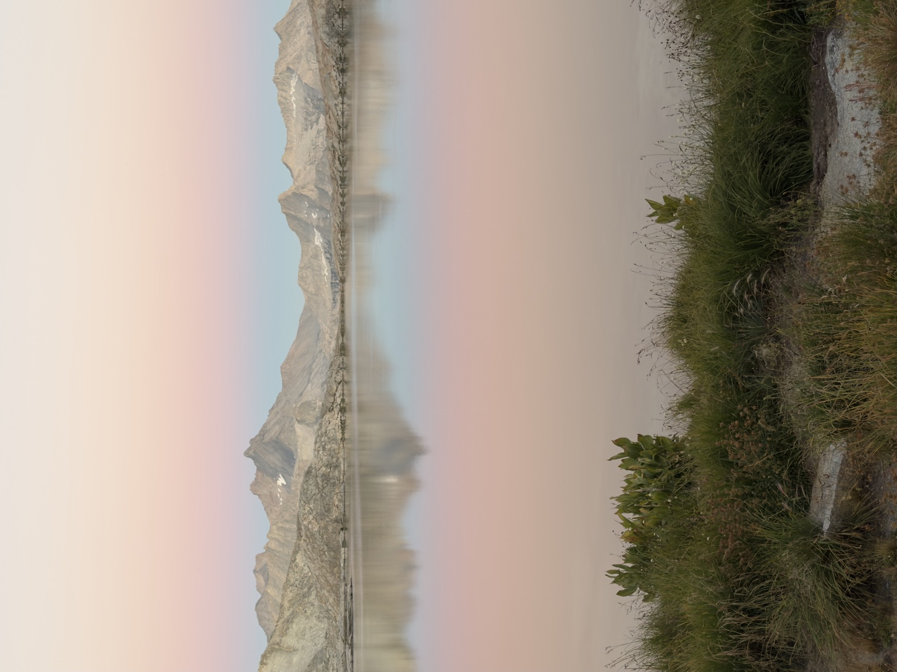
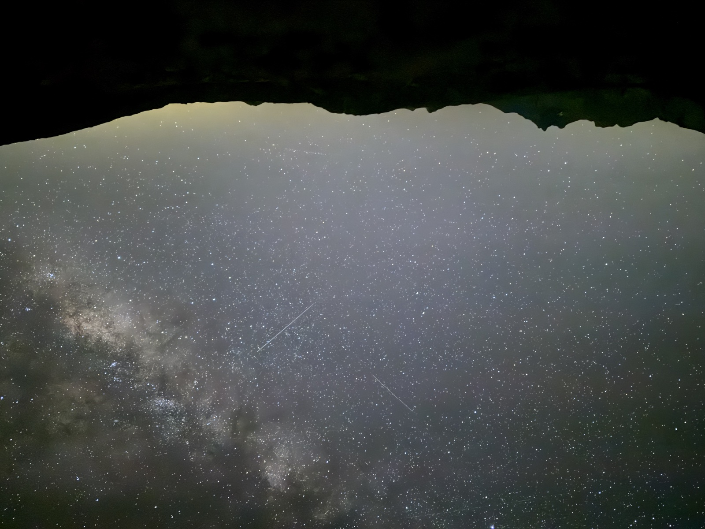
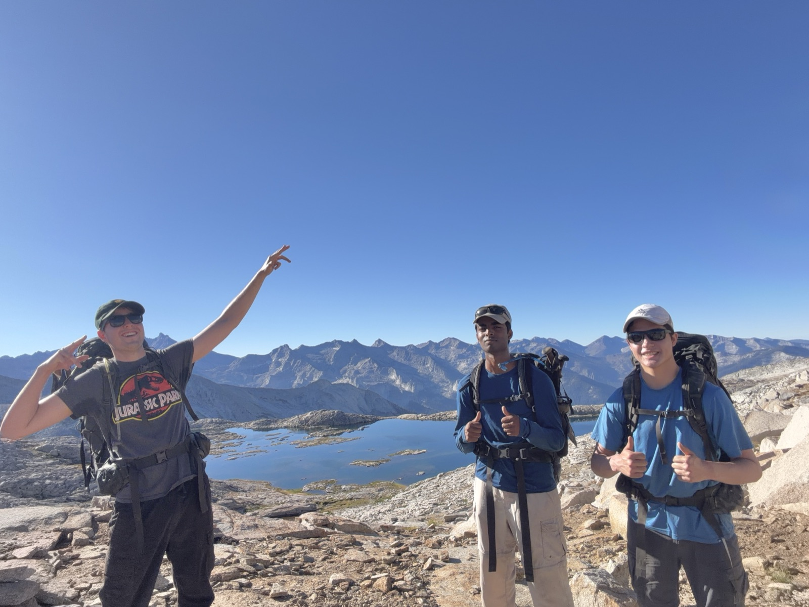

moose lake and the tablelands
august 2026 - seqouia national park

this was our second attempt at reaching moose lake, having tried(unsuccessfully) the previous summer with a larger group and some needlessly heavy packs. this time around we had a more direct route planned, staying the first night at panther gap, going cross country through alta meadows to moose, and then heading down via the lakes trail.
day 1 - wolverton to panther gap
after a late start and lunch in fresno, we pulled into lodgepole around 3pm. permits are walk-in, and thankfully there were still plenty left for the alta trail (the lakes trail is a lot more popular and fills up faster). permits in hand, we drove over to the wolverton trailhead and started our short first day.
the climb to panther gap is a gentle ~1,200 feet over about 3 miles, entirely below treeline. honestly there isn't much of note along the way: around 1.5 miles in the trail forks, with the lakes trail heading left and alta to the right, and from there it's a short stretch to the gap. we set up camp, did a quick scramble up panther peak from the campsite, then came back down for dinner and bed. at around 8,500 feet, panther gap made for a good night at elevation before more climbing on day 2.

day 2 - panther gap to moose lake
we got up around 9am and set off toward moose lake. about a mile down the trail there's a creek where we refilled, and in general there was plenty of flowing water to filter this time of year. we had lunch just before reaching alta meadow (about 700 feet of climbing on trail to get there), and shortly after the meadow we left the trail and started the cross-country section up to moose.

the off-trail section was around 1,500 feet of climbing, and our line was definitely not the most efficient. the trees mostly disappear a bit after the first climb out of alta meadow, and from there we gradually climbed while traversing sideways across the face of the mountain. we tried to stay high before cutting back north once we reached the ridge. if i did it again, i'd stay lower while heading east and save most of the climbing for after we were clear of the brush that covers the slopes east of the meadow. the last push north through the brush, right before we reached the treeless tablelands, was punishing. once on the ridge we took a long break to catch our breath before the final 500-foot climb up to moose.

the lake is much bigger than i expected, and it was very cold for the minute we spent dipping in it. there were around 4-5 other groups camped there, more than i expected. all but one came up via the lakes trail, and the other group came up from alta like us. we spent the evening watching the sunset and stargazing. with a perfectly clear sky and the high elevation, we got some awesome views of the milky way.


day 3 - moose lake to wolverton
day 3 was pretty straightforward. we got going around 9am and headed northwest down the tablelands toward pear lake, passing the lonesome tree (which i've heard used as a navigation landmark by people heading up to moose from pear lake). the lakes trail starts at pear lake, and we took it all the way back down to the wolverton parking lot. we stopped by the general sherman tree and got some ice cream before the drive home. a very, very successful weekend!
